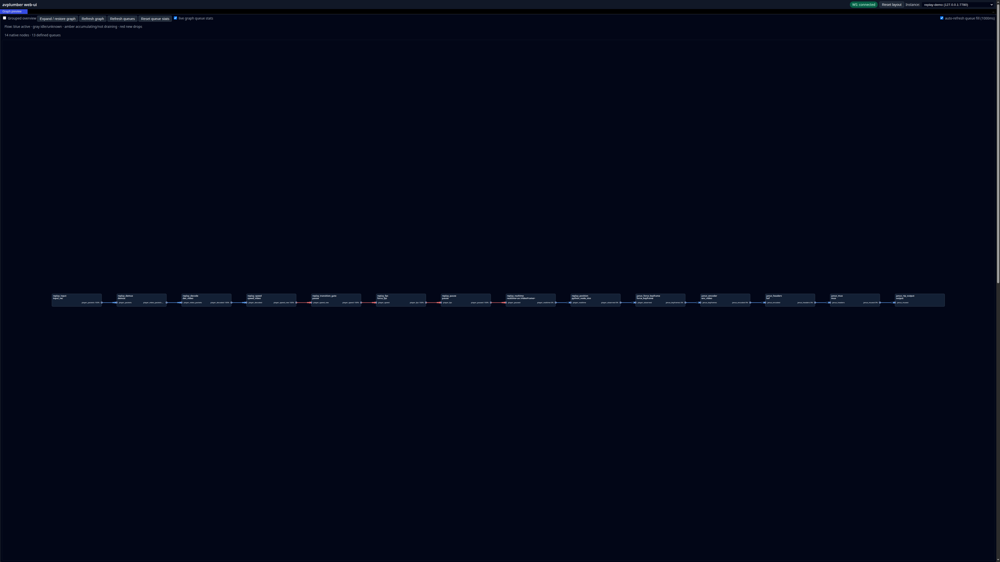

AVPlumber Replay
Code & setup guideReal terminal controls beside their live Janus/WebRTC output. The source frame counter makes pauses, exact frame steps, time seeks, and playback speed visible.
Download the MP4 · 49 seconds · 1.7 MB · silent H.264 video. Recorded on an NVIDIA T4 using generated media.
The complete processing graph
The same running player, inspected through AVPlumber’s web UI: all 14 nodes and 13 queues. Flow runs left to right, from the recording through decoding and transport controls to encoding and RTP output.
